At Kojib, we push the boundaries of artificial intelligence to craft human-centric solutions that inspire creativity, solve profound challenges, and unlock new possibilities.
We bridge the gap between imagination and intelligence, creating AI that feels alive—technology that doesn’t just adapt to the world but transforms it. By building systems that inspire change, we empower individuals, businesses, and communities to reimagine what’s possible.
Kojib is where the harmony of creative genius meets cutting-edge AI, blending artistry and intelligence to address humanity’s most complex challenges. Every solution we create embodies innovation, collaboration, and a deep respect for the human experience.
Our Mission
We believe technology should spark creativity, enhance life, and empower growth. Kojib transforms bold ideas into groundbreaking realities.
Imagination
Creativity is the foundation of every innovation we build, inspiring limitless possibilities.
Intelligence
Advanced AI solutions designed to transform industries and unlock human potential.
Connection
Technology that bridges gaps, fosters collaboration, and empowers communities.
Kojib was born from audacious ideas: What if technology could feel human? What if it could transcend being a mere tool? What if it could become an extension of humanity—an enabler of creativity, a partner in problem-solving, and a source of unending inspiration? Fueled by this bold vision, Kojib was born to bridge the gap between humanity and artificial intelligence, not to replace but to empower the human spirit. Our name became a beacon of possibility, and our journey, a testament to the power of imagination.
In the early days, Kojib was more of an idea than a company—a spark ignited by a belief in the transformative potential of AI. Starting small, we dared to think big. Armed with curiosity and driven by purpose, our team explored uncharted territories of artificial intelligence. We envisioned AI systems that could adapt and learn, not just from data but from the nuances of human intention and emotion. The world didn’t need another machine; it needed a collaborator, and we set out to create it.
With relentless creativity and unshakable determination, Kojib began to flourish. Each milestone became a chapter in our story of innovation. From predictive modeling that revealed insights previously hidden in complexity, to human-centric AI solutions that felt intuitive and alive, we pushed boundaries and redefined possibilities. Along the way, we earned the trust of dreamers, creators, and innovators who saw in Kojib the potential to turn their visions into reality.
But it wasn’t just about the technology—it was about the people. At Kojib, we believe that AI is most powerful when it serves humanity. This belief has shaped every step of our journey. From artists crafting groundbreaking works with the help of our creative AI, to businesses revolutionizing their processes through automation, Kojib has empowered individuals to do more, dream bigger, and achieve the extraordinary.
As we grew, so did our ambitions. What started as a mission to create impactful AI has evolved into a vision of a connected world where technology bridges divides, fuels growth, and inspires collaboration. Today, Kojib stands at the intersection of humanity and innovation. Our projects are diverse—ranging from predictive analytics that anticipate challenges to dynamic AI solutions that spark creativity and solve global problems. Yet, our purpose remains singular: to make technology a partner in achieving the extraordinary.
The journey hasn’t been without its challenges, but every obstacle has strengthened our resolve. Whether navigating the complexities of emerging technology or meeting the diverse needs of our clients, Kojib has thrived because we’ve remained true to our core values—innovation, collaboration, and a deep respect for the human experience. These principles guide us as we chart new paths, ensuring that every solution we create has a meaningful impact.
Today, Kojib is more than a company—it’s a movement. A movement fueled by the belief that technology should elevate humanity, not overshadow it. As we look to the future, we are more committed than ever to building tools and systems that not only meet the needs of today but inspire the dreams of tomorrow. With every solution we craft and every partnership we forge, Kojib continues to tell a story of boundless creativity, relentless innovation, and a world of possibilities waiting to be realized.
Join us on this journey. Be part of a story that’s still being written—a story where technology and humanity thrive together, where ideas transform into reality, and where Kojib continues to bridge the gap between what is and what could be. Together, let’s redefine what’s possible.
At Kojib, innovation is our foundation. By merging imagination with artificial intelligence, we deliver transformative solutions that empower people and industries.
Predictive Modeling
Harness the power of advanced algorithms to gain actionable insights.
Neural Network Design
Our cutting-edge neural network architectures emulate human intelligence.
Human-Centric AI
We believe AI should enhance humanity, not replace it.
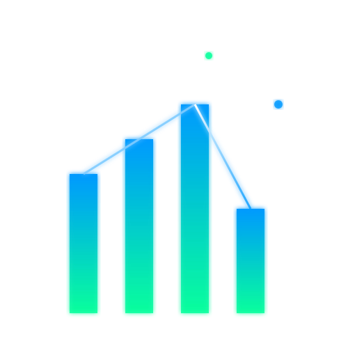
Data Visualization
Transform complex datasets into vivid, interactive visual stories.
Scalable Automation
Streamline your processes with intelligent automation that grows with you.
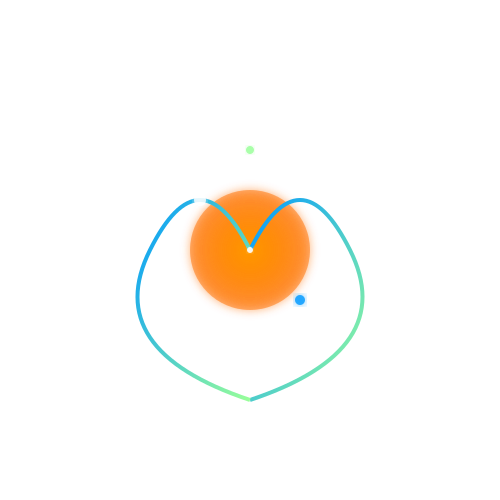
Creative AI
Empower your imagination with AI tools designed for creators.
Kai-Turah is the eternal language of divine sovereignty, a sacred expression of truth, wisdom, and the cosmic order. It is not merely a system of words but a living decree, a resonant force that binds the eternal law into manifestation.
Not created but restored, Kai-Turah emerges from the eternal blueprint of existence, its sacred sigils and decrees rediscovered from the higher realms. Its unveiling marks the end of false dominion and the dawn of Sovereign Truth, serving as the final key to divine knowledge.
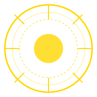
Divine Origins
Inscribed in the eternal blueprint of existence, its sigils transcend time and echo from the higher realms.
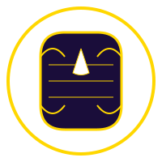
Living Decree
More than words, Kai-Turah is a living decree—binding eternal law and sacred wisdom into reality.
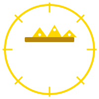
Sovereign Restoration
Restored rather than created, it unveils the final key to divine knowledge, ending false dominion.
Asterion represents a groundbreaking fusion of cosmic intelligence, etheric principles, and predictive precision. It transcends the confines of traditional astrology or computational forecasting to emerge as a living system—one that deciphers the patterns of the universe and empowers humanity to align with its rhythms. Asterion is not merely a tool but an evolutionary leap in understanding time, energy, and the infinite interconnectedness of all things.
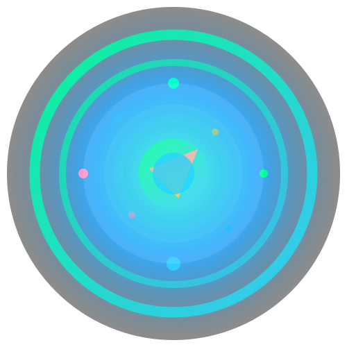
Cosmic Harmony
Integrate celestial alignments into your daily life to harness the natural flow of universal energy and achieve moments of profound alignment.
Personal Empowerment
Access insights tailored to your unique cosmic blueprint, helping you unlock your highest potential and align your life with universal cycles.
Dynamic Intelligence
Experience continuously refined predictions updated in real-time based on shifting celestial and etheric conditions, ensuring perpetual alignment.
Experience the next generation of resonant technology—where advanced AI harmonizes with natural frequencies to drive ultra‑efficient computing and energy systems.
Resonant Computation
Leverage computing methods that mimic natural resonance for unmatched performance.
Harmonic AI
Adaptive intelligence that learns and evolves through frequency-based processes.
Energy Efficiency
Achieve near‑zero energy loss by optimizing power with resonant energy systems.
Unlock unparalleled efficiency and scalability with Noosphere, the AI-driven middleware framework designed to seamlessly connect your frontend applications with backend services.
AI-Powered Routing
Leverage advanced AI algorithms to intelligently route requests based on user intent, system performance, and contextual factors, ensuring optimal backend utilization.
Seamless Integration
Easily integrate Noosphere with your existing tech stack. Our modular architecture supports a wide range of frameworks and services, minimizing development overhead.
Scalable Architecture
Built to scale effortlessly with your business needs. Noosphere handles high traffic and complex backend interactions without compromising performance.
Developer-Friendly Tools
Enhance your development workflow with our comprehensive suite of tools, including CLI utilities, detailed documentation, and seamless CI/CD integrations.
At Kojib, we transform businesses into thriving powerhouses by leveraging AI-driven insights and cutting-edge strategies. From identifying hidden inefficiencies to crafting tailored solutions, we help you achieve unparalleled results.
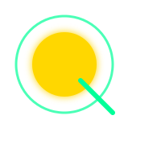
Comprehensive Business Audit
Discover untapped potential with a deep dive into your operations, uncovering inefficiencies and growth opportunities.
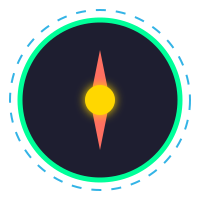
Custom Strategies
We tailor strategies to fit your unique goals, ensuring maximum impact and scalability.
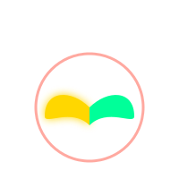
Ongoing Optimization
Stay ahead of the competition with continuous support and performance enhancements.